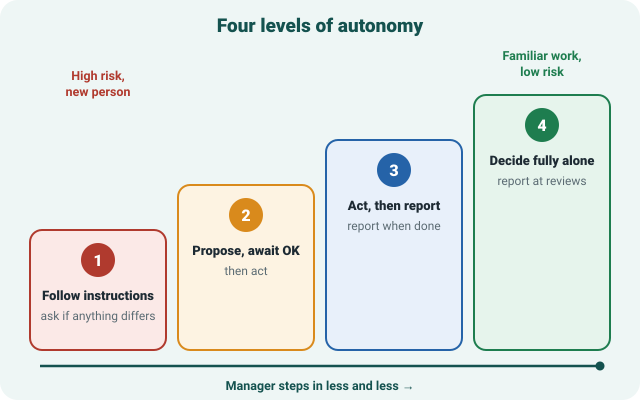

K9 · Leadership and developing others › Level 5 Leading
Delegate clearly, follow up and give regular feedback
This lesson completes Sheet 3: Delegation sheet. Print template. Behaviour-based feedback was covered in Mentor a colleague (N4). The person you delegate to can take Track your tasks and flag delays early.
1. Objectives
- Delegate with a 6-box delegation sheet and ask the person to restate it.
- Choose the right level of autonomy, and set checkpoints for delegated work.
2. Retrieval warm-up
- What are the five parts of a one-page team goal?
- Why should you not ask "Is that clear?"
Answers
- Why; 2–3 results; not doing; each person's part; tracking.
- Because almost everyone says "Yes". Only asking people to restate it shows how well they understood.
Review: Make team goals clear.
3. Explanation
Unclear delegation causes a lot of rework. The person guesses what you want and gets it wrong. The manager gets frustrated and redoes it.
A delegation sheet has 6 boxes. You can say it out loud, but write it down so you both see the same thing.
- Result needed: what the final product is, and who it is for.
- Standard: what "done and good" looks like.
- Deadline: a specific date and time.
- Level of autonomy: how far the person can decide alone.
- Resources: documents, budget, people to ask.
- Checkpoints: when you will both look at progress.

Choose the level of autonomy. High-risk work, or a person without experience: level 1 or 2. Familiar, low-risk work: level 3 or 4. State the level when you delegate. Do not leave people to guess.
Ask the person to restate it. Ask: "Could you sum it up for me: the result, the deadline, and where you decide alone?" Start only when they get it right.
Follow up at checkpoints, not by feel. Check at the agreed checkpoints. In between, step in only when there is a sign of risk. Checking too often makes people feel untrusted.
Two kinds of feedback
- TimelyRight after the event, short, in private if it is a correction.
- RegularIn one-to-ones: look back over a few weeks, choose one thing to improve.
Feedback includes recognising good work. Be specific: what the person did and its effect. "Thanks" alone does not tell people what to repeat.
4. Workplace example
Hypothetical scenario. Nadia heads the dispatch team at a haulage company. She asks Leo, who has 2 years' experience, to plan the trucks for the peak season before the holidays.
The year before, she just said: "Can you sort out the holiday truck plan?" Leo's plan was short of trucks for two major clients, and she had to redo it.
This year, she uses Sheet 3. Result: a truck allocation table for the 4 peak weeks, sent to the driver team. Standard: enough trucks for all 15 contract clients, with 2 spare trucks each day. Deadline: 17:00 next Friday. Autonomy: level 2 for hiring outside trucks, because it costs money; level 3 for scheduling drivers. Resources: last year's data; Sam in accounts for hire rates. Checkpoint: review the draft on Tuesday.
Leo restates it and asks about the budget for outside trucks. On Tuesday, the draft is still short of trucks for one client. Nadia points it out at once, and Leo fixes it.
After the peak, she tells Leo: "Your plan had spare trucks, so when a truck broke down at the port, no delivery was late."
Why this works: all 6 boxes are covered, with autonomy set by risk. The checkpoint catches the error early. The recognition names the action and its effect.
5. Practice
Hypothetical scenario. You manage a mobile phone shop. You want Ivy, a salesperson with 1 year's experience, to organise a weekend promotion for students.
Fill in the 6-box delegation sheet. Write one specific sentence of recognition in case the promotion succeeds.
Hint 1
Which parts of the promotion cost money or affect the shop's reputation? Those need a lower level of autonomy.
Hint 2
The recognition has two parts: what Ivy did, and its effect.
Model answer
- Result: a Saturday–Sunday promotion, with a price list, flyers and a staff rota.
- Standard: sell at least 20 phones to customers with a student card; never sell below cost.
- Deadline: the plan is ready before 12:00 on Wednesday.
- Autonomy: level 2 for the discount amount; level 3 for flyers and the rota.
- Resources: a small printing budget; Ben in the stockroom for stock levels.
- Checkpoints: Wednesday afternoon to review the plan; Saturday evening to look at sales.
- Recognition: "You put an extra person on the counter from 15:00 to 17:00, so nobody had to wait at the busiest time."
(The figures are hypothetical.)
6. Self-check
Choose an answer. Every option has an explanation.
Question 1. You say: "Can you do the stock report?" Which boxes of the delegation sheet are missing?
-
Not quite. Much more is missing. The person does not know who the report is for, what good looks like, or what they can decide.
-
Correct. Correct. A task name is not delegation. The person will have to guess.
-
Not quite. Experienced people still cannot read your mind. What you need may differ each time.
Question 2. A new employee must choose a printing supplier for a trade fair, a large contract. Which level of autonomy fits?
-
Not quite. The task is costly and the person is new. A mistake would be hard to fix.
-
Correct. Correct. They still research and compare, while a costly decision gets approved.
-
Not quite. Then the employee learns nothing. Level 2 is both safe and develops them.
Question 3. You agreed a checkpoint on Thursday. On Monday, you want to ask about progress. When should you ask?
-
Not quite. Checking too often makes people feel untrusted, and reporting takes their time.
-
Correct. Correct. The checkpoint reassures you both. In between, step in only with a reason.
-
Not quite. Staying silent despite a risk may be too late. The checkpoint is the main schedule, not a ban on asking.
Question 4. Which recognition tells the person what to repeat?
-
Not quite. It is warm, but it does not say what was done well.
-
Correct. Correct. It names the action and its effect. The person knows to do it again.
-
Not quite. It praises the person in general. They do not know what to keep doing.
7. Reflection
- The last time work you delegated had to be redone, which of the 6 boxes was empty?
- Are you checking on anyone too often, or too rarely?
8. Real-world application
In the next 7 days, delegate a real task using Sheet 3. Ask the person to restate it. When the work is done, give one specific sentence of recognition.
9. Metadata
| skill | K9 · Leadership and developing others |
|---|---|
| level | Level 5 · Leading |
| group | N5 |
| framework_map | WEF: Leadership and social influence; Talent management; SkillsFuture CCS: Developing People; NACE: Leadership; CSfW: 2b Connect and work with others (reference only) |
| original | Vietnamese version |
| updated | 2026-11-14 |
Finish the lesson
Mark it as done and the site suggests reviews after 1, 3 and 7 days. The data stays on your device only.
Suggested reviews: